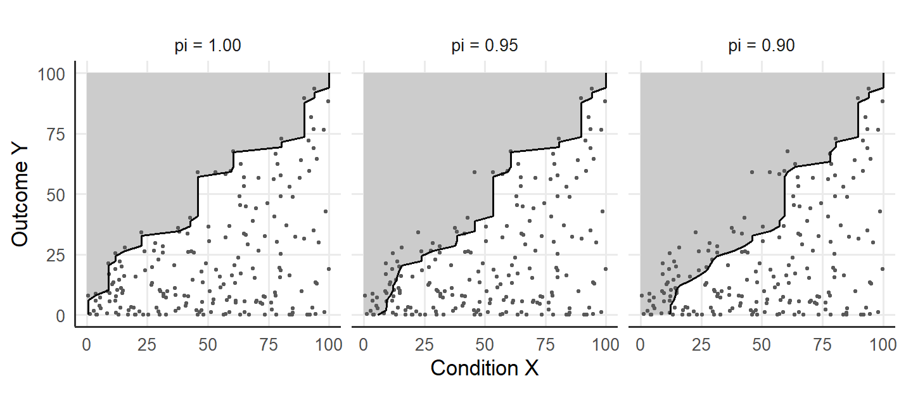

6 The empty zone and the effect size
A necessary condition leaves the upper left of the scatter of the condition X against the outcome Y empty: every case with a high outcome holds a high condition (Dul 2016). Necessary Condition Analysis (NCA) names the empty upper-left region the empty zone and measures the size of the empty zone by the effect size d (Dul 2016, 2020). The effect size relates the area of the empty zone to the area of a scope rectangle \(S = [x_{\min}, x_{\max}] \times [y_{\min}, y_{\max}]\), which bounds the values of the condition and of the outcome.
For an outcome target y, the CE-FDH ceiling of NCA is the running minimum \(r(y) = \min\{X_i : Y_i \ge y\}\), the lowest condition value among the cases that reach the target (Dul 2016). The CE-FDH effect size integrates the width of the empty zone over the outcome range and divides the integral by the scope area (Dul 2016):
\[ d_{\text{CE-FDH}} = \frac{\int_{y_{\min}}^{y_{\max}} [r(y) - x_{\min}]_+ \, dy}{(x_{\max} - x_{\min})(y_{\max} - y_{\min})}, \qquad [a]_+ = \max(a, 0). \]
The division by the scope area makes the effect size dimensionless, and the value of the effect size depends on the scope and on the calibration of the scope bounds (Deja 2026b). Under a data-range scope, the largest observed outcome fixes the top of the rectangle. Under a fixed scope that extends past the largest observed outcome, the unobserved band at the top of the scope counts as empty with the required level \(x_{\max}\), the area convention of CE-FDH (Deja 2026b).
6.1 The effect size at a stated tolerance
Quantile Necessary Condition Analysis (QNCA) keeps the bottleneck, the empty-zone effect size and the permutation test of NCA and makes each output specific to a tolerance pi in (0, 1] (Deja 2026b). The tolerance fixes the share 1 - pi of successful cases that may sit below the reported requirement. On an ordered grid of outcome targets \(G = \{y_1 < \dots < y_m\}\) with \(y_1 = y_{\min}\) and \(y_m = y_{\max}\), the raw frontier at the target \(y_j\) takes the \(k_j\) cases with \(Y_i \ge y_j\) and returns the condition value of rank \(h_j = \max\{1, \lceil k_j (1 - \pi) \rceil\}\) among the \(k_j\) cases. At pi = 1, the rank is 1 at every target, and the raw frontier equals the CE-FDH ceiling \(r(y_j)\).
The fitted frontier \(\tilde\varphi_\pi\) follows from the raw frontier in three steps (Deja 2026b). The monotone envelope replaces the value at each target by the running maximum over the lower targets, so the requirement of a lower target carries to every higher target. Under a fixed scope, the fitted frontier takes the value \(x_{\max}\) at the targets above the largest observed outcome. Between two consecutive grid points, the fitted frontier is the straight line between the two grid values.
The effect size d_pi applies the ratio of NCA to the fitted frontier (Deja 2026b):
\[ d_\pi = \frac{\int_{y_{\min}}^{y_{\max}} [\tilde\varphi_\pi(y) - x_{\min}]_+ \, dy}{(x_{\max} - x_{\min})(y_{\max} - y_{\min})}. \]
The package computes the integral by the trapezoid rule on the outcome grid and clamps the ratio to the interval [0, 1]:
\[ d_\pi = \min\left\{1, \max\left\{0, \frac{\sum_{j=1}^{m-1} (y_{j+1} - y_j)\,(w_j + w_{j+1})/2}{(x_{\max} - x_{\min})(y_{\max} - y_{\min})}\right\}\right\}, \qquad w_j = [\tilde\varphi_\pi(y_j) - x_{\min}]_+ . \]
The trapezoid sum equals the area left of the fitted frontier, because the fitted frontier is linear between consecutive grid points (Deja 2026b).
6.2 The effect size of the synthetic dataset
The synthetic dataset of 200 cases of the qnca repository has a condition and an outcome on a scale from 0 to 100, and the analysis fixes the scope at [0, 100] x [0, 100]. The function qnca() with B = 0 returns the effect size on the default grid of 50 outcome targets and skips the permutation test.
library(qnca)
d <- read.csv("https://raw.githubusercontent.com/MarekDejaUJ/qnca/main/data/qnca_dataset_n200.csv")
scope <- c(0, 100, 0, 100)
pis <- c(1, 0.95, 0.90)
fits <- lapply(pis, function(p) qnca(d$X, d$Y, pi = p, B = 0, scope = scope))
effects <- data.frame(pi = pis, d_pi = sapply(fits, function(f) f$d_pi))
effects
#> pi d_pi
#> 1 1.00 0.4941481
#> 2 0.95 0.5406425
#> 3 0.90 0.5916388The trapezoid sum over the bottleneck table of the fit at pi = 0.95 reproduces the effect size of the package.
b <- fits[[2]]$bottleneck
w <- pmax(b$X_required - scope[1], 0)
area <- sum(diff(b$outcome_level) * (head(w, -1) + tail(w, -1)) / 2)
area / ((scope[2] - scope[1]) * (scope[4] - scope[3]))
#> [1] 0.5406425The file pi_grid_results.csv of the repository stores the effect sizes of the same dataset for the same grid and scope, rounded to six decimals.
stored <- read.csv("https://raw.githubusercontent.com/MarekDejaUJ/qnca/main/data/pi_grid_results.csv")
stored <- stored[stored$dataset == "n200", ]
data.frame(pi = pis, computed = round(effects$d_pi, 6), stored = stored$d_pi)
#> pi computed stored
#> 1 1.00 0.494148 0.494148
#> 2 0.95 0.540643 0.540643
#> 3 0.90 0.591639 0.591639The computed and the stored effect sizes agree at the three tolerances. The effect size rises from 0.494 at pi = 1 to 0.541 at pi = 0.95 and 0.592 at pi = 0.90, because a lower tolerance selects an order statistic of equal or higher rank at every target, and a higher frontier encloses a larger empty zone (Deja 2026b).
labels <- sprintf("pi = %.2f", pis)
frontier <- do.call(rbind, lapply(seq_along(pis), function(i) {
data.frame(tolerance = labels[i], fits[[i]]$bottleneck)
}))
zone <- do.call(rbind, lapply(seq_along(pis), function(i) {
b <- fits[[i]]$bottleneck
data.frame(tolerance = labels[i],
X = c(scope[1], b$X_required, scope[1]),
Y = c(scope[3], b$outcome_level, scope[4]))
}))
frontier$tolerance <- factor(frontier$tolerance, levels = labels)
zone$tolerance <- factor(zone$tolerance, levels = labels)
ggplot() +
geom_polygon(data = zone, aes(X, Y), fill = "grey80") +
geom_point(data = d, aes(X, Y), size = 0.6, colour = "grey35") +
geom_path(data = frontier, aes(X_required, outcome_level), colour = "grey5") +
facet_wrap(~ tolerance) +
coord_equal(xlim = c(0, 100), ylim = c(0, 100)) +
labs(x = "Condition X", y = "Outcome Y")
Figure 6.1: The 200 cases of the synthetic dataset with the fitted frontiers at the tolerances pi = 1.00, 0.95 and 0.90, on a grid of 50 outcome targets and the fixed scope [0, 100] x [0, 100]. The grey region left of each frontier is the empty zone, whose area divided by the scope area is the effect size d_pi. At pi = 0.95 and 0.90, the empty zone holds the successful cases that the tolerance admits below the frontier.
6.3 The magnitude of the effect size
The magnitude of d_pi is tolerance-relative. Lowering pi raises the frontier and the effect size by construction and changes the estimand, so the three effect sizes of the dataset form a sensitivity reading across exception tolerances (Deja 2026b). Dul (2016) reads a CE-FDH effect size below 0.1 as small, from 0.1 to below 0.3 as medium, from 0.3 to below 0.5 as large and from 0.5 upward as very large. The landmarks belong to the strict member at pi = 1, which equals the CE-FDH ceiling, and a reading of the landmarks at pi < 1 would need a separate calibration (Deja 2026b).
cut(effects$d_pi[1], breaks = c(0, 0.1, 0.3, 0.5, 1), right = FALSE,
include.lowest = TRUE, labels = c("small", "medium", "large", "very large"))
#> [1] large
#> Levels: small medium large very largeThe strict effect size of 0.494 falls in the class large. The effect size of 0.592 at pi = 0.90 lies past the landmark 0.5, and the move across the landmark comes from the tolerance alone, since a lower tolerance enlarges d_pi mechanically (Deja 2026b).
6.4 The scope in the denominator
The effect size depends on the scope rectangle, because the scope area forms the denominator and the scope bounds limit the empty zone (Dul 2016). A call of qnca() without the argument scope uses the data-range scope, whose top is the largest observed outcome.
data_range <- qnca(d$X, d$Y, pi = 1, B = 0)
data.frame(scope = c("fixed", "data range"),
area = c(fits[[1]]$scope, data_range$scope),
d_1 = c(fits[[1]]$d_pi, data_range$d_pi))
#> scope area d_1
#> 1 fixed 10000.000 0.4941481
#> 2 data range 9277.772 0.4560861Under the fixed scope with an area of 10000, the strict effect size is 0.494; under the data-range scope with an area of 9278, the strict effect size is 0.456. The scope bounds follow the data or external anchors, and the analyst fixes the bounds before the effect size is calculated (Deja 2026b).
6.5 The grid error at the strict tolerance
The strict-limit reduction states that d_pi at pi = 1 equals the CE-FDH effect size of NCA for the continuous step ceiling (Deja 2026b). The function nca_ce_fdh_d() integrates the step ceiling exactly, whereas qnca() integrates the fitted frontier by trapezoids on a finite grid. The two values differ by a discretisation error, which falls as the grid is refined (Deja 2026b).
exact <- nca_ce_fdh_d(d$X, d$Y, scope = scope)
grids <- c(50, 100, 200, 400, 800, 1600)
grid_d <- sapply(grids, function(m) {
qnca(d$X, d$Y, pi = 1, n_grid = m, B = 0, scope = scope)$d_pi
})
data.frame(n_grid = grids, d_1 = grid_d, exact = exact, difference = round(grid_d - exact, 7))
#> n_grid d_1 exact difference
#> 1 50 0.4941481 0.4927391 0.0014090
#> 2 100 0.4935439 0.4927391 0.0008048
#> 3 200 0.4924957 0.4927391 -0.0002433
#> 4 400 0.4927501 0.4927391 0.0000110
#> 5 800 0.4929307 0.4927391 0.0001916
#> 6 1600 0.4927718 0.4927391 0.0000327The difference is 0.0014090 on the default grid of 50 targets and 0.0000327 on a grid of 1600 targets. The grid of 400 targets, the grid of the strict-limit validation of Deja (2026b), gives a difference of 0.0000110. Between grid sizes, the difference changes sign and falls irregularly, because the trapezoid error depends on the position of each step of the ceiling relative to the grid points.
6.6 The same call in Python and Julia
The Python package qnca and the Julia package QuantileNecessity return the same effect sizes and the same exact CE-FDH value for the same data, grid and scope.
from urllib.request import urlopen
import numpy as np
from qnca import qnca, nca_ce_fdh_d
url = "https://raw.githubusercontent.com/MarekDejaUJ/qnca/main/data/qnca_dataset_n200.csv"
X, Y = np.loadtxt(urlopen(url), delimiter=",", skiprows=1, unpack=True)
scope = (0.0, 100.0, 0.0, 100.0)
for pi in (1.0, 0.95, 0.90):
print(pi, qnca(X, Y, pi=pi, B=None, scope=scope).d_pi)
print(nca_ce_fdh_d(X, Y, scope=scope))
#> 1.0 0.49414805999615674
#> 0.95 0.540642522189369
#> 0.9 0.5916388206216742
#> 0.4927390942912612using QuantileNecessity, Downloads, DelimitedFiles
url = "https://raw.githubusercontent.com/MarekDejaUJ/qnca/main/data/qnca_dataset_n200.csv"
data = readdlm(Downloads.download(url), ',', Float64; skipstart = 1)
X, Y = data[:, 1], data[:, 2]
scope = (0.0, 100.0, 0.0, 100.0)
for p in (1.0, 0.95, 0.90)
println(p, " ", qnca(X, Y; pi = p, B = 0, scope = scope).d_pi)
end
println(nca_ce_fdh_d(X, Y; scope = scope))
#> 1.0 0.49414805999615674
#> 0.95 0.5406425221893691
#> 0.9 0.5916388206216743
#> 0.4927390942912612A value of d_pi carries meaning together with the tolerance, the scope rectangle and the outcome grid that produced the value, and a report of d_pi states all three settings beside the effect size.